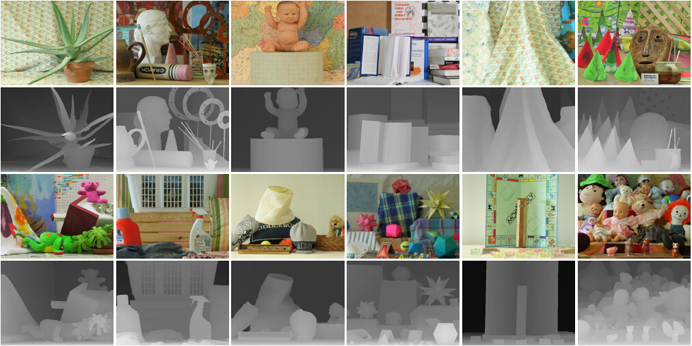
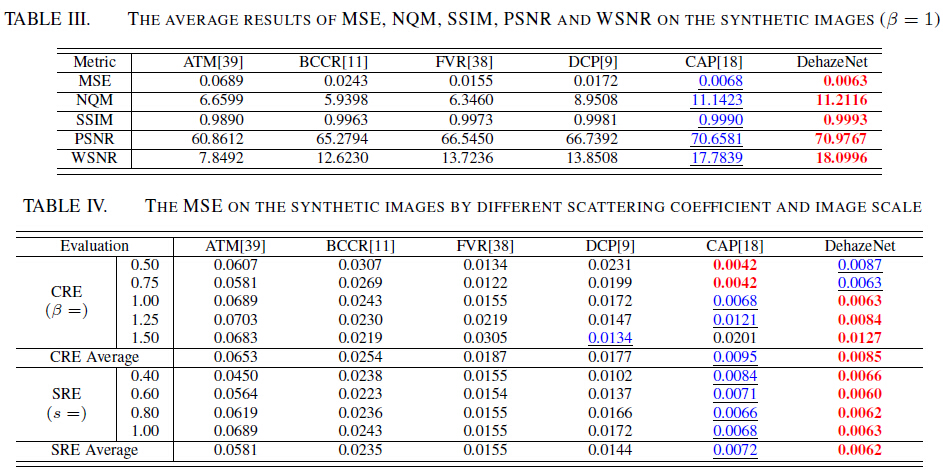
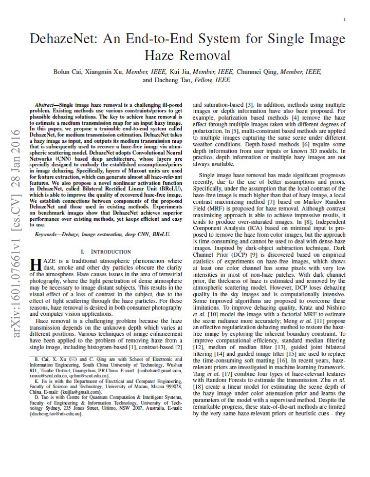

South China University of Technology
|  |
Refined depth maps based on Middlebury Stereo Datasets |
Abstract
Because all of the dehazing algorithms can obtain truly good results on general outdoor images, it is difficult to rank them visually. To verify the effectiveness on complete images, DehazeSet is a synthesized hazy dataset from stereo images with a known depth map. There are 12 pairs of stereo images collected in Middlebury Stereo Datasets (2001-2006) and refined by Slanted Plane Smoothing Stereo (SPS-St). The hazy image is generated based on the atmospheric scattering model with pure white atmospheric airlight α = 1. Moreover, a scale robustness evaluation (SRE) and a coefficient robustness evaluation (CRE) are proposed to analyze the influence from the scale variation and scattering coefficient.
Comparison

Downloads
|  |
"DehazeSet: A Dehazing Evaluation Dataset & Toolkit" |
Last update: April 09, 2016